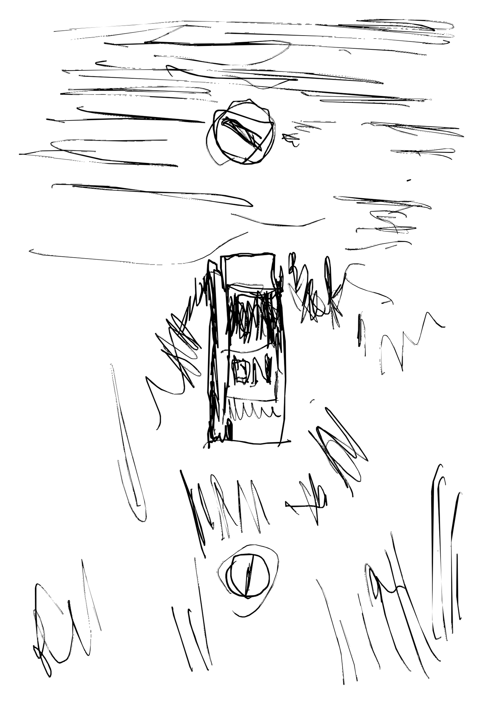
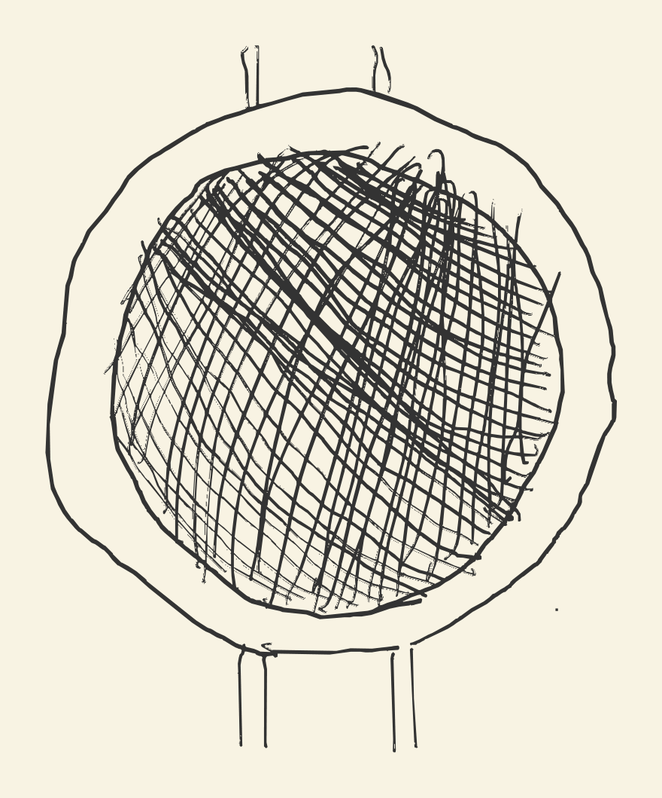
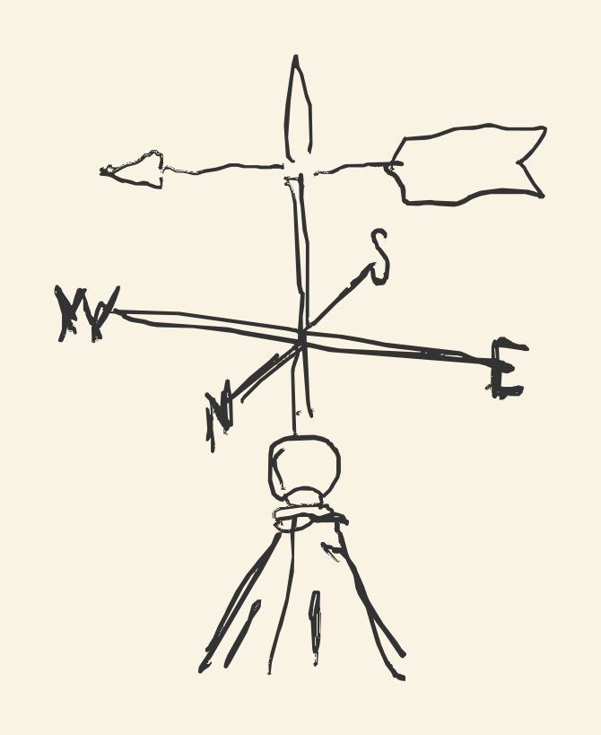

Did we actually agree with the agent?
Mutation testing has a small revival going, and it arrives attached to AI. The pitch is the old one: break the code one small change at a time, see whether any test fails, and grade your tests by what they miss. We use the same tool and read the report the other way round. Our tests are the specification's own scenarios and nothing else, so a change that survives is not a weak test. It is code the specification does not hold: either we forgot to write something down, or the agent invented something, and the report says which line. That turns a test quality metric into an answer to the question we actually have when an agent builds from a written agreement: did it do what we said, and is there code in there that nothing we wrote would miss? How far this can be taken is still unclear to us. It feels very promising, and if others have written it up, we have not seen it.

The honest box. Photograph: Christopher Bill, on Unsplash.
We build from a specification: what the system should do, written where the whole team can read it, with the behaviour as Gherkin scenarios that run. A scenario is a test, and it is the only kind of test there is; a test exists because a rule is expressed in the specification. Last month we argued that this written agreement is what a team keeps alive, and that the implementation can become a box nobody opens as long as the box can still be asked why. This is about a second question for the box. Not why. Whether. An agent built an implementation from the specification last week, every scenario is green, and somewhere in the implementation there is code no sentence asked for. Either we forgot to write it down and the agent covered for us, an omission, or the agent invented it, an invention. From the outside the two look the same. Both are green. Neither was specified. What we want to be able to say of the box is: nothing more is implemented than what we told it.
Two things it takes to see through
The first we have: a faithful translation from specification to tests, so that every rule has a test that fails when the rule is broken, and no tests exist beside them. Our weekly rebuild, where agents build the system again from the specification alone, rests on it. The second is a question few people ask: if the implementation were changed, would those scenarios fail? Coverage cannot answer it. Coverage says which lines ran, and a line can run under forty tests and still be changed freely if none of the forty checks what it did.

One small change.
The technique, in one screen
Mutation testing answers the second question. A tool makes one small change to the implementation, flips a negation, deletes a line, swaps a string, and runs the tests that touch it. The changed program is a mutant. If a test fails, the mutant is killed; if none does, it survived. Then the code goes back and the next change goes in. Every mutant needs a run of its own, so it is slow, and baselines from an earlier run keep later runs to what changed. Some mutants change nothing observable and survive for that reason, equivalent mutants in the literature; every tool produces a share of them, no tool can tell you which, and sorting them is the work. The technique is from 1971, and engineers we consider very senior have never heard of it.
Lately it has had a small revival, attached to AI. The mechanism has not changed; the mutants were always generated, and a run costs what it costs. What changed is that sorting survivors by hand, the work that killed adoption, is now agent work. The pitch it travels under has not changed either: mutation testing is a quality review of your tests. It is an honest pitch and it sticks. It is also not the reading we find valuable, and the other one, if others have taken it, we have not seen discussed.

What passes through.
Point it at the specification
Run mutation testing on the scenarios only; if a test did not come from a sentence in the specification, it does not get a vote. Now read the report the other way round. A survivor is not a weak test. It is code that no sentence of the specification holds, and since the code exists to satisfy the specification, every survivor is a question for the specification, not for the tests. That is the flip, and it is the whole of what we are offering.
When a mutant survives and actually changes behaviour, the report has to say which of three things happened. An invention: the code it touched is inessential to the specification, and the agent built something we never asked for. An omission: the code does something the specification never captured, and we asked for less than we meant. Or a leak: a scenario reached the code but did not constrain it, a mock returning an empty default being the usual cause, and until a leak is fixed the other two readings are not available. We had a run on the screen while we talked. A deleted line around an entity that should never have been there: an invention. Two survivors traced to a mock, so the deletion was never observed: leaks, fixed first. The cleanest omission came later, arguing over this draft. A cache has no functional behaviour, so delete it and every scenario stays green, and the explanation, when it came, was a non-functional requirement nobody had written down.
Where a mutant goes
The whole mechanism in one picture. A killed mutant says a scenario holds that line; a survivor is a question, and the report says which of three.
What the report says
The report divides the implementation in two. Code whose mutants all die is held by the specification: some scenario fails when it changes, and nobody needs to read it. Code with a survivor is not held, and it is the only code anyone has to read, each survivor arriving with its reading: an invention to remove, an omission to write into the specification, a leak to fix. The percentage is a trend line. The partition is the result.
One limit should be said plainly. A killed mutant proves that some scenario holds that line, not that the line does only what the scenario says. If the specification says the applicant is notified and the agent notifies everyone, deleting the call kills the mutant, and the other recipients were never checked. Extra behaviour that rides on a held line is invisible here, so the specification has to say what must not happen as well. The method shows drift. It cannot guarantee there is none.

Undecided.
Why not simply prove it
Formal specification tempts us: write the agreement in a language a proof checker reads and let the checker decide. But what we cannot check is whether the specification says what we meant, and a proof does not touch that. It moves the leap of faith one artefact up. Our leap sits under every scenario, in the step definitions that turn a sentence into a call, ordinary code somebody reads or trusts. The method is worth exactly what that translation is worth.
The question, again
A fifty-year-old technique, read against the specification instead of the tests, tells you which of the agent's code your agreement holds and which it does not, and hands the rest back as questions in a language everyone in the room can read. How far this can be taken we do not yet know. It feels very promising. The demo runs for free.
When a mutant survives in your suite today, can you tell an omission from an invention?